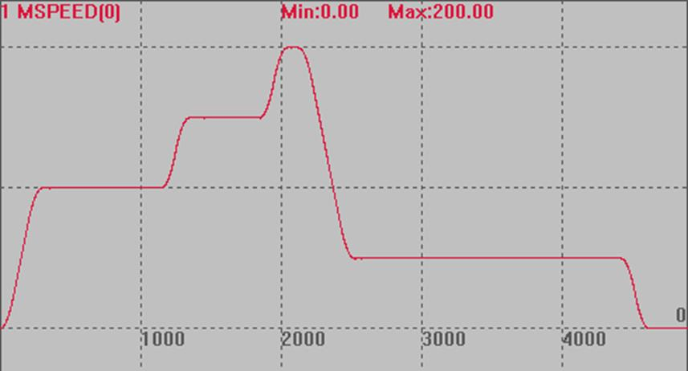

|
类型 |
轴参数 |
|
描述 |
自定义速度的SP运动的强制速度，单位为units/s
这个参数被带入运动缓冲。 当FORCE_SPEED大于SPEED时，SPEED同时也会生效限制住最高速度(140716以后版本SPEED不起作用)。 如果要求进入本段的时候FORCE_SPEED已经降为对应的速度，请设置STARTMOVE_SPEED。 |
|
语法 |
可读：VAR1 = FORCE_SPEED或VAR1 = FORCE_SPEED(轴号) 可写：FORCE_SPEED = expression或FORCE_SPEED(轴号) = expression |
|
适用控制器 |
通用 |
|
例子 |
BASE(0) DPOS=0 ATYPE=1 UNITS=100 '脉冲当量100 ACCEL=500 DECEL=500 SPEED = 100 '速度100units/s FORCE_SPEED=150 '自定义速度150units/s SRAMP=100 'S曲线 MERGE=ON TRIGGER '自动触发示波器 MOVE(100) '不带SP使用SPEED速度 MOVESP(100) '速度为150 FORCE_SPEED=200 MOVESP(100) '速度为200 FORCE_SPEED=50 MOVESP(100) '速度为50 END
速度曲线： MSPEED(0)垂直刻度100  |
|
相关指令 |